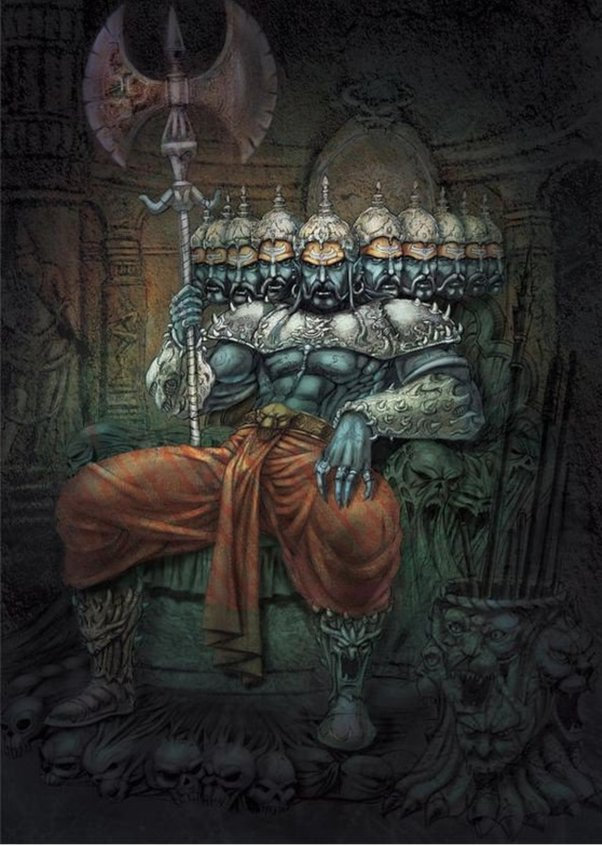

<link rel="stylesheet" href="../../../style.css">
<header>
  <h1>Ravana</h1>
</header>
<main>
  <ol>
    <li>Name : Ravana</li>
    <li>Yuga: Treta</li>
    <li>Defeated by: Lord Rama</li>
    <hr />
    <li>Illustrative image:</li>
    
    <p>
      Description: Ravana was endowed with a great splendor and shone with a
      glittering and precious diadem of gold as also encircled with strings of
      pearls.
    </p>
    <p>
      Ravana was adorned with bright-colored gold ornaments, inlaid with diamonds
      and decorated with worthy gems.
    </p>
    <p>
      Ravana was attired in very costly silk and his body was smeared with
      red-sandal paste and well painted with various brightly colored designs.
    </p>
    <p>
      Ravana looked strange with his ten heads, having terrible-looking yet
      good-looking pair of red eyes each, with brilliant sharp enormous teeth and
      protruding lips.
    </p>
    <p>
      Ravana was having a pearl necklace casting its splendor on his bosom. He was
      shining like the full moon and appeared like a cloud illumined by the rising
      sun.
    </p>
    <p>
      Ravana was distinguished by his immensely strong arms, smeared with excellent
      sandal-paste and decked with shining bracelets.
    </p>
  </ol>
</main>